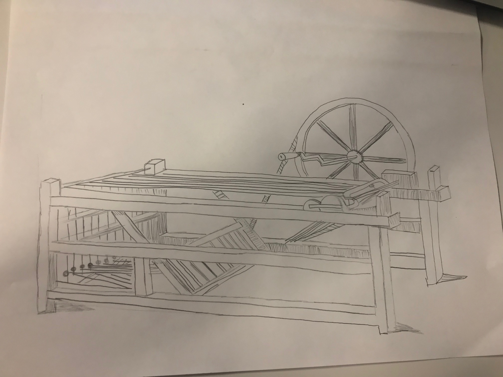
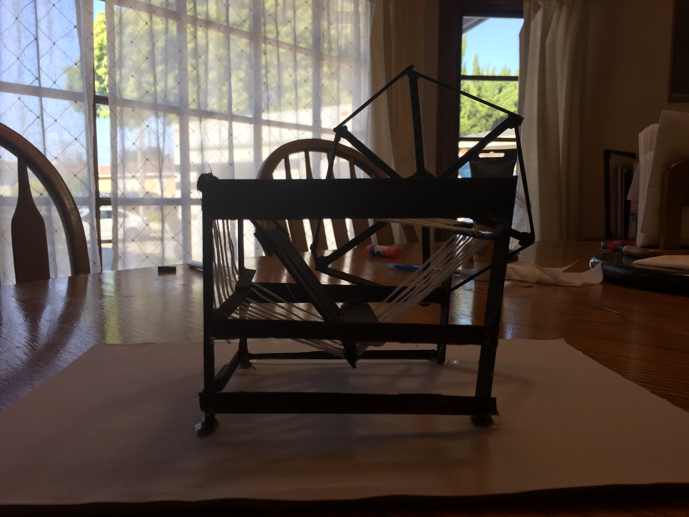

Recently, we have been learning about the Industrial Revolution, a period that lasted from approximately 1750 to 1850. During this time, new inventions and innovations came to fruition across the world, especially in Europe and North America. With a group, I had to research a chosen inventions (in my case, the spinning jenny), draw a sketch, and finally, make a model of it. On this page, you can see all of my work from that.
Much like inventors, I had to make a "blueprint" of my design before building. This is my sketch. I used a picture of a spinning jenny I found online that I based my drawing on.
This is my model. After drawing my sketch, I gathered all the materials I needed (in this case popsicle sticks, glue, and string) and began building. With my group, we built the wheel first, followed by the structure and lastly the little details. We glued everything together before painting it brown. The last step was to wrap the strings around it the same way they would in an actual spinning jenny.